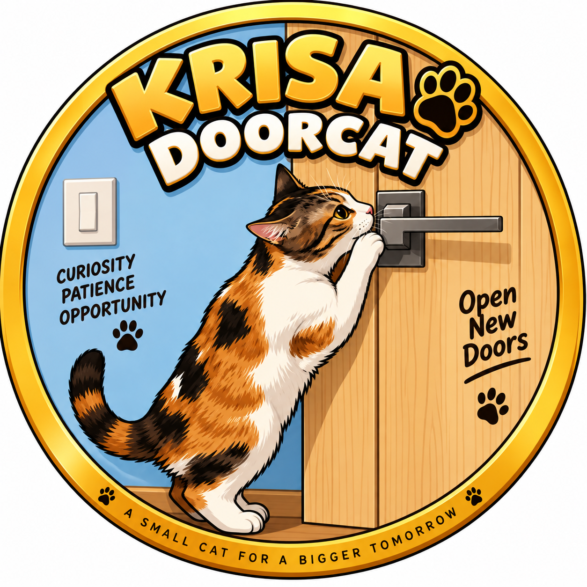

A curious cat from Sofia.
She found a door.
Now she wants to see what's behind it.
Krisa is a real cat living in Sofia, Bulgaria.
She watches doors, explores everything and believes every closed door deserves investigation.
Curiosity brought her here.
Name: Krisa
Home: Sofia, Bulgaria
Occupation: Opening doors
Personality: Extremely curious
Special skill: Being where she shouldn't be
Krisa has her own token.
$KRISA is a memecoin inspired by a real cat, created for fun and made to be played with.
No roadmap.
No promises.
Just a curious cat, an open door and a token.
Contract address will appear here.
Krisa's game is simple: turn internet curiosity into something useful.
If the project grows, Krisa wants to use part of the experiment to help cats that need food, care or a home.
No grand promises. What happens will be shown openly.